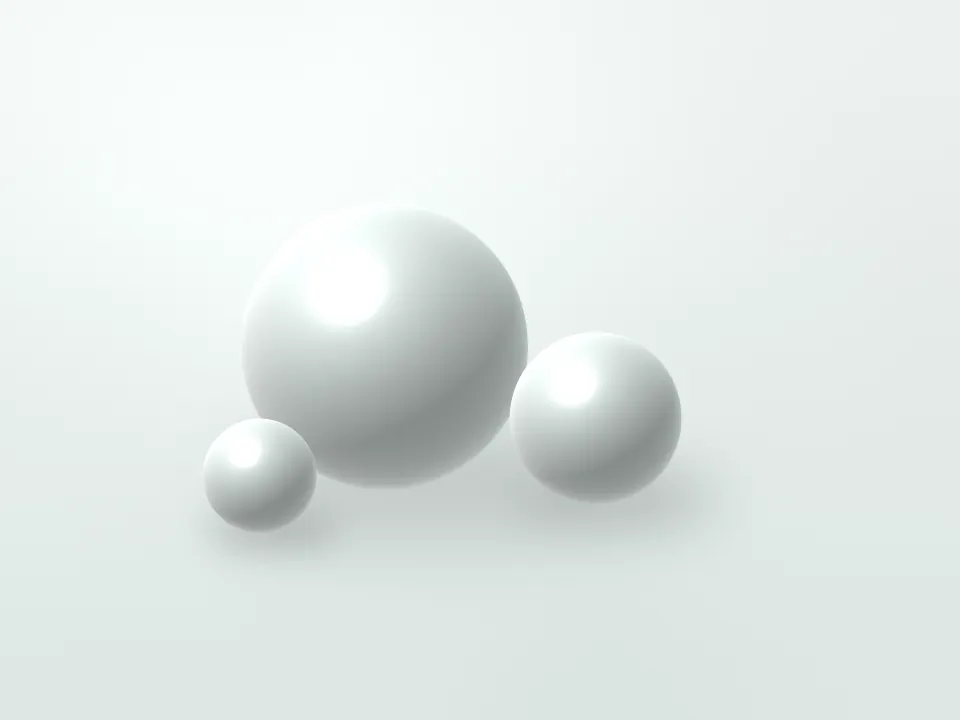

HIFU（高密度焦点式超音波）
超音波を皮膚の深い層に集めて熱を加え、たるみが気になる部分に働きかける治療です。皮膚を切らずに行う施術で、フェイスラインや頬、あご下のたるみが気になる方に行います。照射中は骨に響くような痛みや熱さを感じることがあるため、様子を伺いながら出力を調整します。
- 施術時間
- 約40分（全顔）
- 回数の目安
- 3〜6か月ごと
- ダウンタイム
- 赤み・むくみ 数時間〜数日
- 麻酔
- ご希望に応じて麻酔クリームを使用します（別途費用）
監修：院長 汐見 透子（皮膚科専門医）／最終確認日

こんな方に
- フェイスラインのもたつきや、頬のたるみが気になる方
- あご下のたるみが気になる方
- 切開をともなう手術は避けたい方
- 年齢による肌のハリの変化が気になる方
症状の原因によっては、ほかの治療が適している場合があります。診察のうえでご提案します。
施術の流れ
-
カウンセリング・診察
たるみの状態や皮膚の厚みを確認し、照射する範囲と深さを決めます。
-
洗顔・マーキング
メイクを落とし、照射する範囲に印をつけます。
-
照射
ジェルを塗り、部位ごとに深さを変えながら照射します（全顔で約40分）。
-
確認・保湿
照射後の肌の状態を確認し、保湿をして終了です。
費用と主なリスク・副作用
費用とあわせて、起こりうるリスク・副作用をご確認ください。
費用（税込）
| メニュー | 料金（税込） |
|---|---|
| 全顔 1回 | 55,000円 |
| フェイスライン・あご下 1回 | 38,500円 |
| 目のまわり 1回 | 27,500円 |
| 全顔 3回コース期間の目安 9か月 | 148,500円クーリング・オフ対象 |
- 照射する範囲は診察で決め、見積書に記載します。
- 麻酔クリーム（1部位）：3,300円（税込）
- このほかに、初診料 3,300円（税込）がかかります。
主なリスク・副作用
- 赤み・腫れ・むくみ
- 押したときの痛み（筋肉痛のような痛み）
- 一時的なしびれ・感覚の鈍さ
- 内出血
- まれに、やけど（線状の赤みや水ぶくれ）
- まれに、神経への影響による一時的な表情の動かしにくさ
症状が出た場合は、診察のうえで必要な処置を行います。気になる変化があれば、施術日以外でもご連絡ください。
未承認医療機器に関する表記（サンプルの記載例）
未承認の医療機器を使う施術で表示が必要な5項目の記載例です。このサイトは架空のサンプルで、実在の機器の承認状況を示すものではありません。
- 未承認医療機器であること
- （記載例）本施術に使用する機器は、医薬品医療機器等法上の承認を受けていません。
- 入手経路
- （記載例）当院の医師の判断により、輸入代行業者を通じて個人輸入した機器を使用しています。
- 国内の承認医療機器の有無
- （記載例）国内で承認されている、同一の性能を有する医療機器はありません。
- 諸外国における安全性などの情報
- （記載例）製造国では医療機器として承認されています。諸外国では、やけどや神経の損傷などのリスクが報告されています。
- 医薬品副作用被害救済制度について
- （記載例）万一、重い副作用が生じた場合、国の医薬品副作用被害救済制度の対象とならないことがあります。
回数・期間とダウンタイム
回数・期間の目安
3〜6か月に1回を目安とし、経過を診察で確認しながら回数を決めます。たるみの程度や皮膚の状態によって、必要な回数や仕上がりの感じ方には個人差があります。
ダウンタイム
照射後に赤みやむくみが出ることがあり、多くは数時間から数日でおさまります。照射部位を押したときの痛みや一時的なしびれが、数日から数週間続くことがあります。
施術時間・麻酔
- 施術時間
- 約40分（全顔）
- 麻酔
- ご希望に応じて麻酔クリームを使用します（別途費用）
コース契約のクーリング・オフと中途解約
期間が1か月を超え、金額が5万円を超えるコース（表の「クーリング・オフ対象」印）は、特定商取引法の「特定継続的役務」に当たります。部位などを組み合わせて契約し、合計金額が5万円を超える場合も同じです。
- クーリング・オフ
- 契約書面を受け取った日から8日以内であれば、書面または電磁的記録（メールなど）で契約を解除できます。すでに施術を受けていても、その費用をお支払いいただく必要はありません。
- 中途解約
- 8日を過ぎた後も、契約期間内であれば中途解約ができます。この場合、受けた施術の料金と、法令で定める上限の範囲内の解約手数料を差し引いて返金します。
受けられない方
- 妊娠中・授乳中の方
- ペースメーカーなど、体内に植え込む医療機器を使用している方
- 照射部位に金属のプレートやシリコンなどが入っている方
- 照射部位に炎症や傷、感染症がある方
- 照射部位に最近ヒアルロン酸などの注入を受けた方（時期をご相談ください）
- ケロイド体質の方
このほか、持病や服用中のお薬によっては施術をお控えいただく場合があります。問診票に、できるだけ詳しくご記入ください。
アフターケア
- 当日は、長時間の入浴やサウナ、飲酒など、体が温まることを控えてください。
- 照射部位は強くこすらず、丁寧に保湿してください。
- しびれや痛みが長引く場合はご連絡ください。診察のうえで対応します。
- 次回の照射は、経過を診察で確認してから時期を決めます。
ご予約・お問い合わせ
HIFU（高密度焦点式超音波）についてのご相談・ご予約は、Webフォームまたはお電話で承ります。カウンセリングでは、費用とリスクをご説明したうえで、施術を受けるかどうかをご検討いただけます。
- 電話受付
- 10:00〜19:00（日曜は17:00まで）
- 休診日
- 木曜・祝日
- 所在地
- 〒000-0000 東京都港区南青山0-0-0 サンプルビル3階
ご予約・ご相談
カウンセリングの日に、施術を受けるかどうかを
決める必要はありません。
費用とリスクを確かめてから、ゆっくりご検討ください。